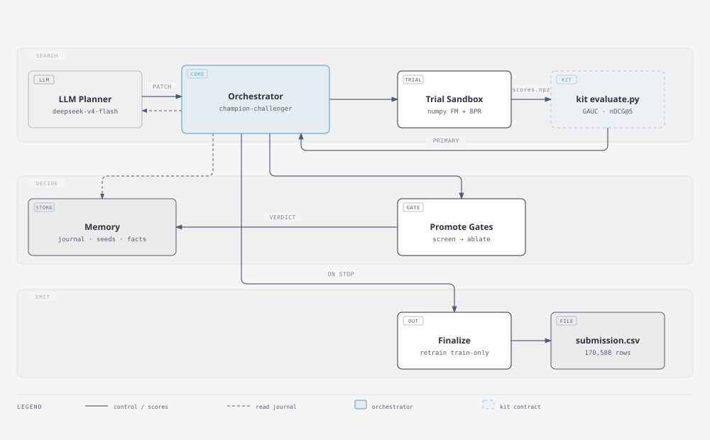
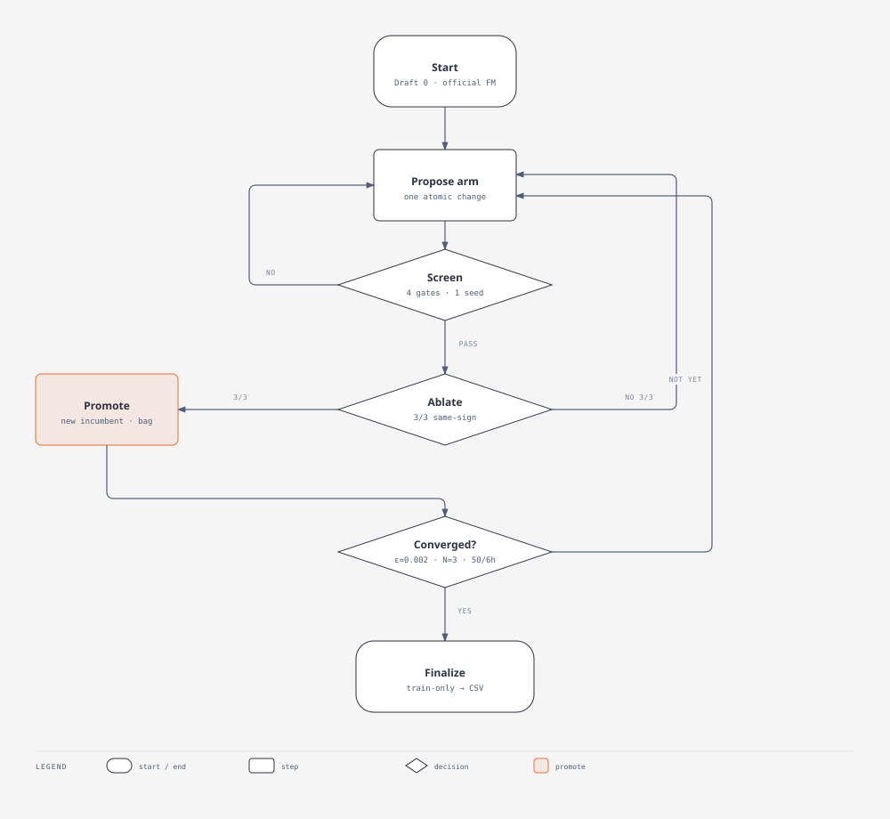

TikTok TechJam 2026 · Track 2
An autonomous loop for within-user ranking on KuaiRand-Pure. Reproduce the official FM. Change one thing. Score with kit evaluate.py. Write the test CSV.
The task
Every valid day is one list. Same for test. A feature that peeks at other rows in that list is ranking a list that already contains its labels.
Valid primary 0.6016. Published test 0.5946. Kit evaluate.py is the contract. We do not edit it.
Submitted Pure
3-seed rank average of pairwise BPR on the numpy FM. Members 012–014. Search incumbent was DIN-50; finalize kept the BPR bag.
Architecture · search loop

Flowchart · champion–challenger

The useful failure · Leaky Pure
What we lock in
Unseen labels are -1. Only train 0/1 updates decay and last-k.
Kit evaluate.py always runs in the parent. A trial that patches it is rejected.
Screen vs the current bag. Both date-halves. nDCG not down. Paired interval.
No test labels in search. Retrain on train. Prefer a stable valid number, not max(valid).
Autonomy · and a bonus
github.com/wushi2333/techjam2026-recsys-agent
github.com/wushi2333/techjam2026-recsys-agent_data-log